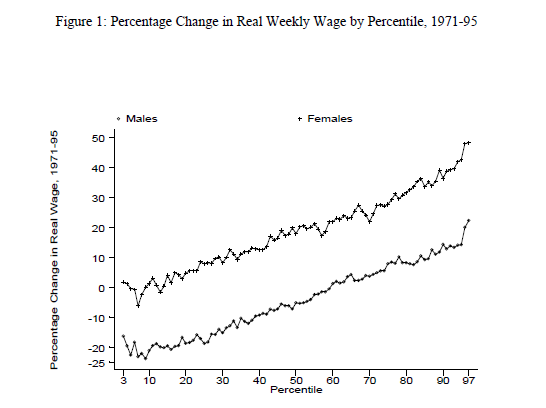
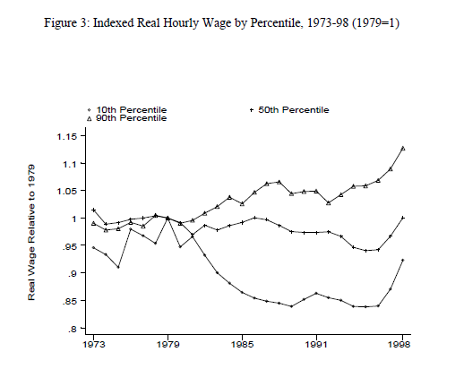
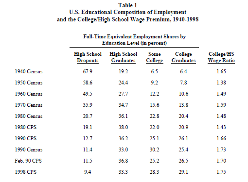
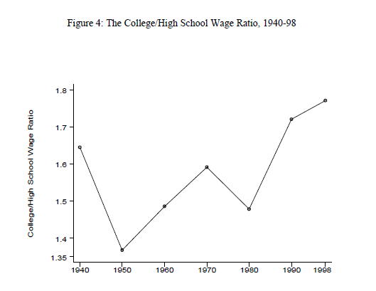
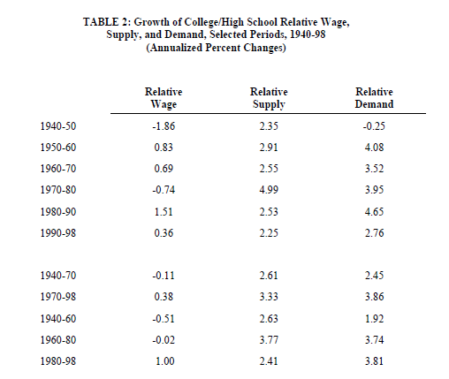

Technological Change, Computerization, and the Wage Structure
This is a paper from Katz (1999). The paper is divided into different sections, as well as this summary.
Introduction
The increase in wage inequality and educational wage differentials were affected for some important technological and organizational changes the society two decades ago. There are two pieces of evidence that try to draw a link between the two: the employment of skilled workers has increased rapidly compared to low-skilled labor in the US during the 80s and 90s; and the use of those highly educated workers is related to the introduction of new technology as well as capital intensity.
Recent Changes in Wage Structure
There are some important changes in the US wage structure defined as follows:
- Between the 1970s and mid-1990s, the weekly earnings of the 90th percentile (someone earns more than 90% of all workers) compared to the 10th percentile (whose earnings exceeded those of only 10% of the workers) grew by 45% for men and 35% for women.
- The difference in wages from people whose graduates in college compared to the ones with a degree is the first ones earn 33% more than the others.
- The salary for workers with the same demographic characteristics (age, sex, occupation, education) is much more unequal than 20 years ago..
In Figure 1, 2 and 3 some of these changes can be illustrated.

Figure 1 represents the spreading out of the wage distribution for men and women between 1971 and 1995.

Figure 2 represents the rising wage inequality for both genders. Because of the fact that there was a huge recession from 1980 to 1985 and this led to a decrease in employment for manufacture, that period is characterized by rapid growth in terms of inequality.

Three important factors are stated in Figure 3. The difference with the symbols is in t; It represents how the wage per hour for men and women changes over the period from 1973 and 1998. It is represented by the wage of the 90th, 50th and 10th percentile.
Relative Supply and Demand For Skills
To explain the changes in the supply and demand of skilled workers, the author uses different elements:

Table 1 plots the evolution of the educational composition of the labor input from 1940 to 1998. As stated in the table, as years passed, the number of people that dropped out or were only high school graduates decreased over time. On the other hand, the number of people in terms of some college and college graduates increased over time, so they formed most of the part of the total inputs in the labor market.

Figure 4 illustrates the evolution of the premium that the workers that had attended college had. As we can observe, in 1950 the college/high school wage ratio was at the lowest point. Also, from 1980, it has only increased, reaching the highest point (in all the possible years of the graph) in 1998. The values of this figure are taken from Table 1.

Related to the topic in the figure above, Table 2 summarizes the growth of College/High
School wage, supply, and demand.
In this table, we can observe the problem with the skill-biased technological change. It is clearly
illustrated in the relative demand between the time period 80-90 and 90-98. There is a decrease
in demand, not an increase as the years before. The decrease is because of the introduction of
the computers and machinery that substitutes some part of the total workers of the companies.
This change in demand can be because of two changes: those that occur inside the industries,
such as changes in prices, the introduction of new technologies, or new capital equipment; and
the ones that occur between industries.
Technical Change, Computerization, and the Demand for Skills

Table 3 illustrates the evolution of the integration of computers in the workplace. Females, high skilled workers, whites, and white-collar workers have more possibilities to have a computer on their job and they also have experienced higher growth in terms of wages since 1979 compared to men, low skilled workers, blacks, and blue-collar workers respectively.
The demand for relative labor may be affected by computer technology. The use of computers substituting workers is more difficult the more complex is the task. To understand how technological change affects the labor market, we need to take into account the long-run implications of computerization and the increase in the digital economy. One can be that the highly educated workers are more flexible and make easier the adaption of technologies. This implies that the relative demand for highly educated workers will change for some time.
Conclusion and Research Directions
During the 20th century, the relative demand for highly educated and highly skilled workers has increased.it increased rapidly in the 80s and decreasing the speed of growth in the 90s. This huge increase in the relative skill demand had been helped skill-biased technological and organizational changes.
Photo from: Unsplash
Original Article: Katz, L. F. (2000): “Technological Change, Computerization, and the Wage Structure” in Understanding the Digital Economy: Data, Tools, and Research, ed. by E. Brynjolfsson, and B. Kahin, pp. 217-44. The MIT Press